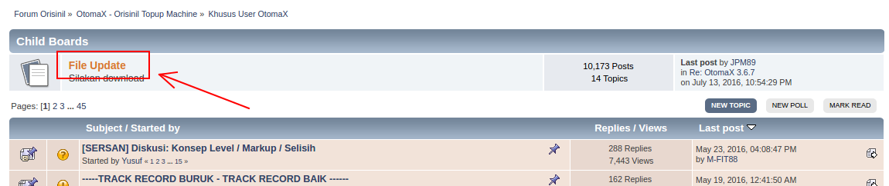
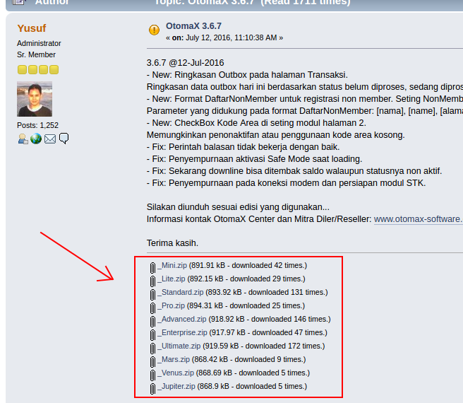

F.A.Q => Tentang OtomaX
Tanya:
Bagaimana melakukan update OtomaX?
Jawab:
- Cek masa berlaku OtomaX Anda, masuk menu Bantuan -> Tentang -> box Masa Berlaku. Karena update hanya dapat dilakukan bila OtomaX dalam masa berlaku.
- Login ke Forum OtomaX dengan menggunakan account berstempel User OtomaX. Bila belum punya account klik disini dan klik disini.



- Pada halaman di bawah, download file update OtomaX sesuai edisi yang Anda miliki:

- Extraxt file update OtomaX hasil download dan kemudian tutup OtomaX.
- Copy dan paste ke folder OtomaX (lokasi yang disediakan untuk instalasi OtomaX, lihat disini); atau ke folder lokasi instalasi OtomaX Anda. Bila muncul jendela konfirmasi: klik Copy and Replace.
- Selesai.